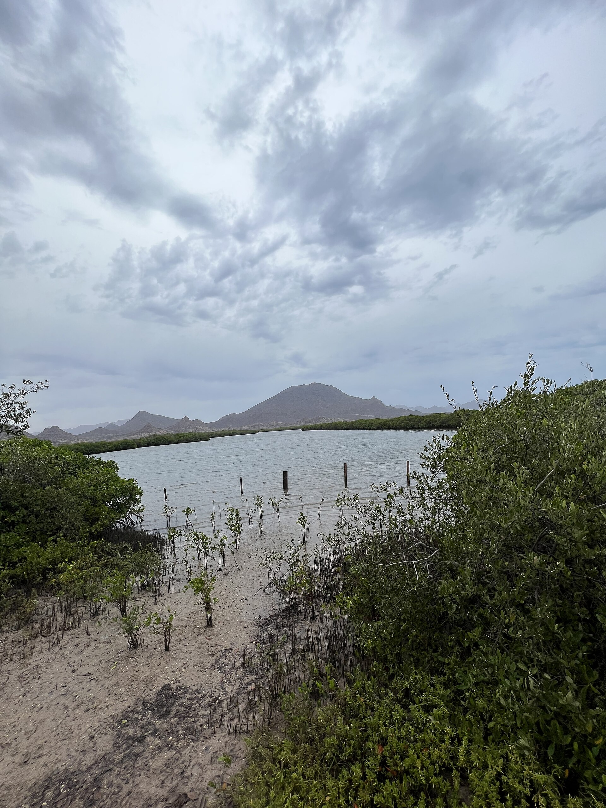
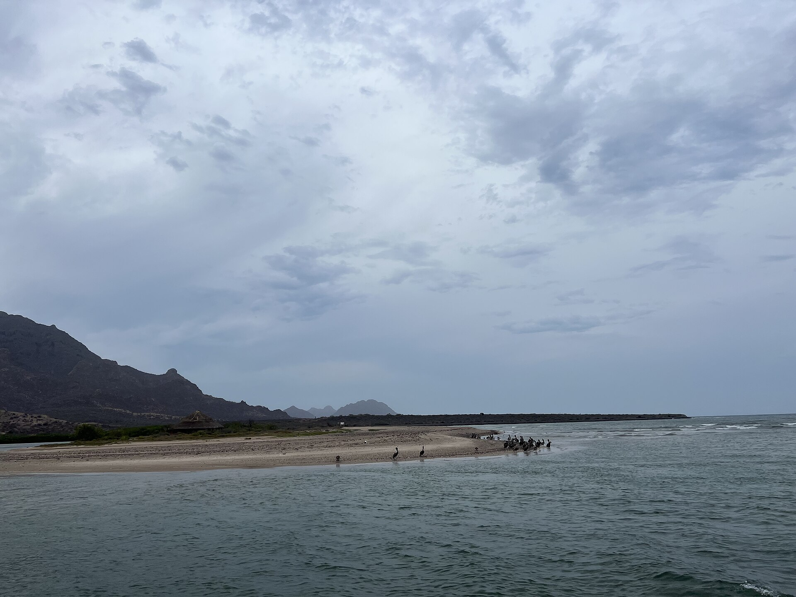
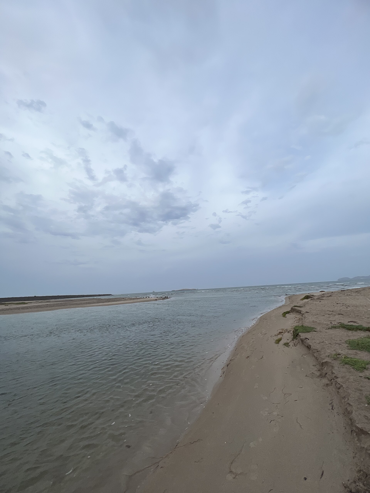
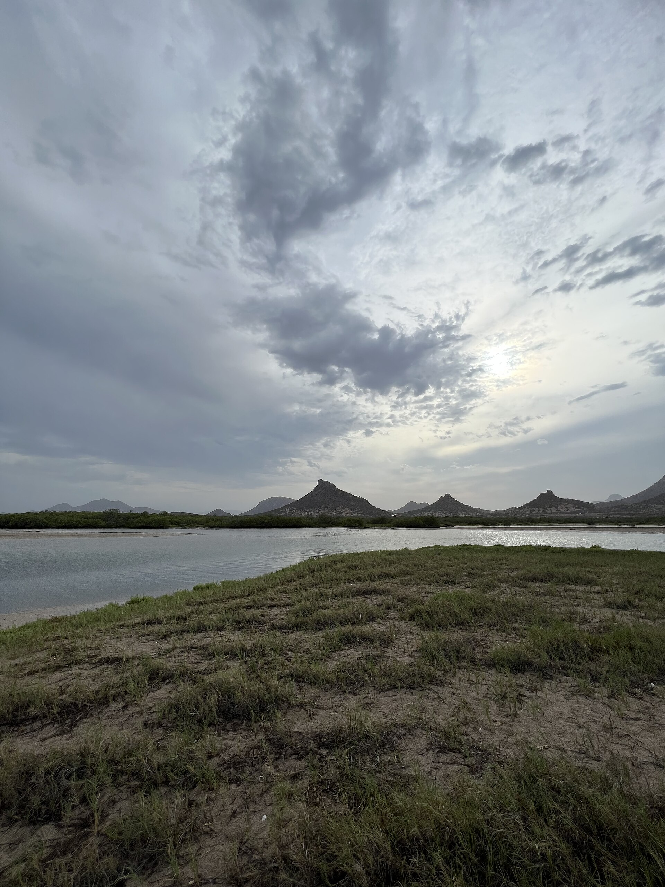

نخست / گالری تصاویر
گالری تصاویر رامسر
مجموعهای از تصاویر واقعی منطقه برای آشنایی بصری با طبیعت، چشماندازهای شهری و جاذبههای رامسر.
قابهایی از شمال
رامسر از نگاه تصویر
گالری برای نمایش عکسهای واقعی و باکیفیت منطقه طراحی شده است. تصاویر در قالب کارتهای هماندازه و واکنشگرا نمایش داده میشوند تا در تلفن همراه نیز بهراحتی مرور شوند.









در صورت آمادهبودن تصاویر بیشتر در مخزن، میتوان گالری را با همان الگوی نامگذاری گسترش داد. انتساب عکسها به خود پروژه یا مراحل ساخت، فقط پس از تأیید منبع تصویر انجام میشود.
اطلاعیهها و خبرهای مجموعه
برای دنبالکردن اطلاعات منتشرشده به بخش اخبار بروید.